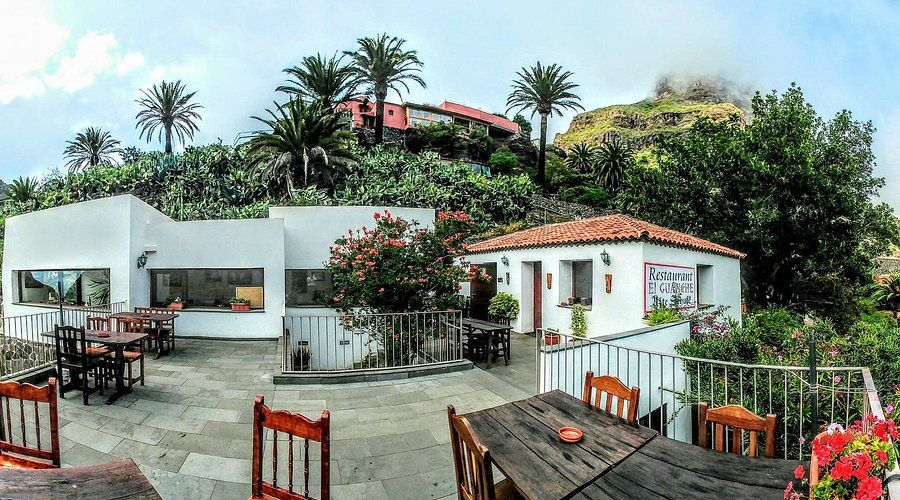

Seen By Olivier Tenerife
Positive vibes and delightful surprises are ready to be discovered at SEEN Beach Club by Olivier Tenerife - the place to be by the sea. Throughout the day, you can savour a leisurely swim and, in the evening, have fun in a lively atmosphere. With a menu designed for sharing delights with friends or enjoying the best fish and meat on the island.
Menu :
Seafood
Mediterranean
Brunelli's Steakhouse
The best steakhouse on this side of the Atlantic, with the most amazing views of the ocean. Our meats, are crispy on the outside and tender on the inside, cooked at 800ºC in our Southbend Grill, unique in the Canary Islands. A splendid steakhouse located close to the entrance to the Loro Parque zoo.
Menu
American
Steakhouse

El Guanche
Family Restaurant, since 1971. Traditional Canarian cuisine Vegetarian fusion. 90% Vegetarian. More than a lunch we offer you a culinary experience as you have never lived, in a unique place that offers the Masca Valley. Lovely Restaurant and fantastic homemade food.
Menu
Spanish Cuisines
Vegetarian friendly
La Torre Del Mirador
La Torre Del Mirador garners praise for its scenic location and breathtaking views, creating a fine dining atmosphere that many guests find justifies the premium prices. While the restaurant's ambiance, enhanced by live music and elegant decor, is frequently celebrated, the food quality receives mixed reviews—some visitors relish the fresh seafood, yet others question the value due to inconsistent preparation.
Menu
Seafood
Vegetarian friendly
Sal Fina
Sal Fina restaurant has won the hearts of many diners with its eclectic menu that garners praise for burgers and Italian cuisine, though a few have noted a scarcity of Italian options and occasional lapses in dish preparation. Guests have called out the amiable and careful staff, suggesting reservations to navigate its popularity and at times, lengthy service.
Menu
Italian, Mediterranean
Vegetarian friendly
Trattoría By Royal Hideaway
Trattoria is a word that comes from "trattore", which means to prepare. At the new Trattoria by Il Bocconcino, we prepare our dishes the way Italian mammas cooked them; Homemade pastas and sauces, antipasti, foccacias and delicious pizzas baked by our master pizza maker in a wood-fired oven. All this in a relaxed and informal atmosphere ideal for sharing and enjoying with the family.
Menu
Italian Cusines
Vegetarian friendly
Ibéricos Gastro Bar
Iberian specialties, as well as different food options, a variety of wines, delicious cocktails, among other drinks, a good atmosphere and excellent service. Ibéricos Gastro Bar emerges as a beloved spot for its exceptional balance of value and quality, with many patrons recommending reservations to secure a taste of their generous, well-spiced dishes like the acclaimed Iberian pork and ham risotto.
Menu
Mediterranean
Vegetarian friendly
The Bank Steak House
The Bank, the restaurant that offers you a unique dining experience the Hotel Villa Cortes, located in Playa de las Americas! Prepare to delight your palate with our unique contemporary approach to an East Coast-inspired steakhouse. While some reviewers mention the steep prices, many agree that the attentive service and flavorful, perfectly prepared steaks justify the cost.
Menu
American
Steakhouse
El Rinconcito De Hilario
I have been to this restaurant and I came out fully satisfied! Everything was really very good, from the first to the second, to the desserts. Portions are plentiful, so you come out full and happy. The staff is friendly and attentive, and the welcoming atmosphere makes the experience even more enjoyable. Definitely a place to come back!
Menu
Seafood
Vegetarian friendly

Guannabí
Guannabí is a restaurant located in the old town of Santa Cruz de Tenerife, in an old and typical Canarian house that has been completely renovated achieving a modern and cosmopolitan design, but respecting and maintaining the charm of the rustic and old. It is a place that welcomes you with just entering and added to a menu prepared with great care thus achieving a fusion between Mediterranean cuisine with nuances of Mexican, Peruvian and Asian cuisine.
Menu
Mediterranean
Vegetarian friendly
El Gomero
Fantastic little restaurant where the locals go, including cops and cab drivers! Its between los christianos and playa de las americas. Lovely local Spanish food. Great variety on the menu and food was so tasty. Waiters was so nice and friendly. Very good variety and quality of products, fast service and all the welcoming and friendly staff.
Menu
Mediterranean
Vegetarian friendly